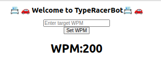
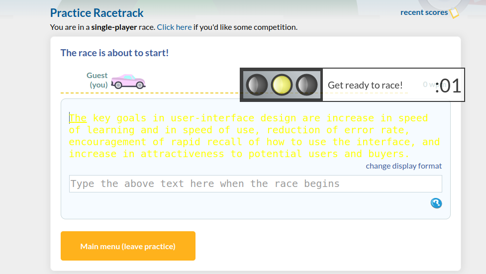
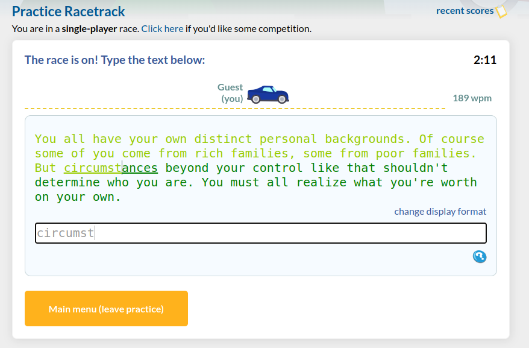
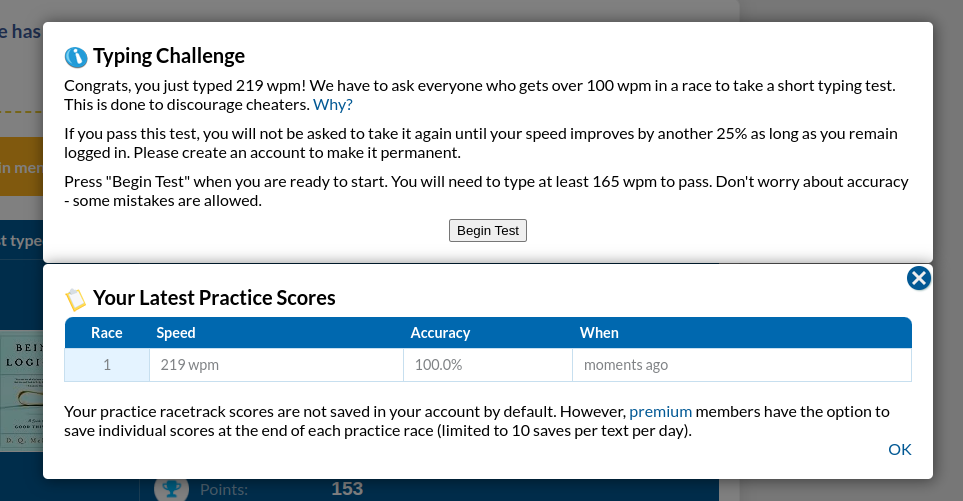

1) Enter WPM target in the input field below and press the "Set WPM" button. This value will be an approximate value, as the script will attempt to match the target WPM, but will not be exact.
2) At game start, the text will turn yellow, indicating the text has been copied but not yet able to be written.
3)Once the the timer reaches 0, the text will turn green indicating the race has started. The input field will automatically be focused, and the text will begin to be typed. No input is required from the user.
4) Once you have completed the race, a warning will appear if you completed over 100wpm asking to retest. This is the extent of the script as it's purpose is to prank friends and not to actually cheat in official races. Tell your friends the "race again" option isn't working, then reload the page to race again.
Congrats, you are now a TypeRacer Master!